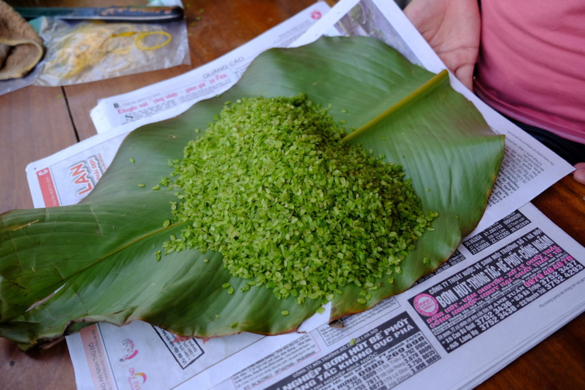
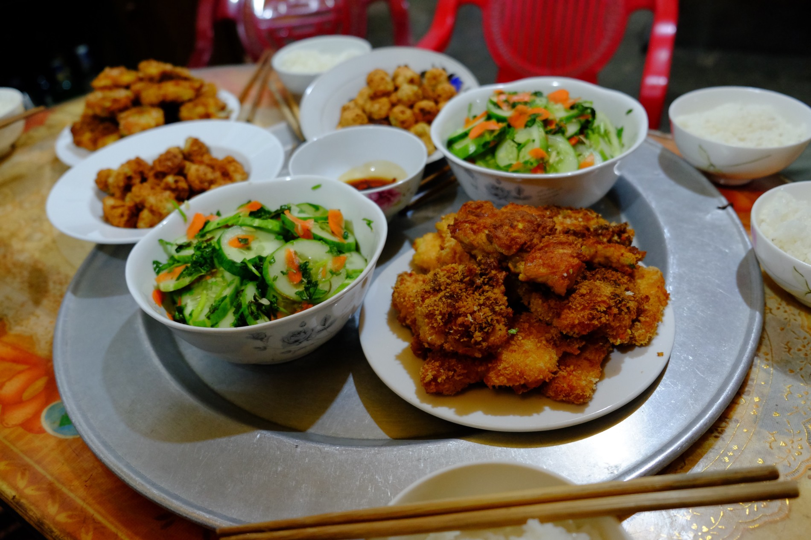
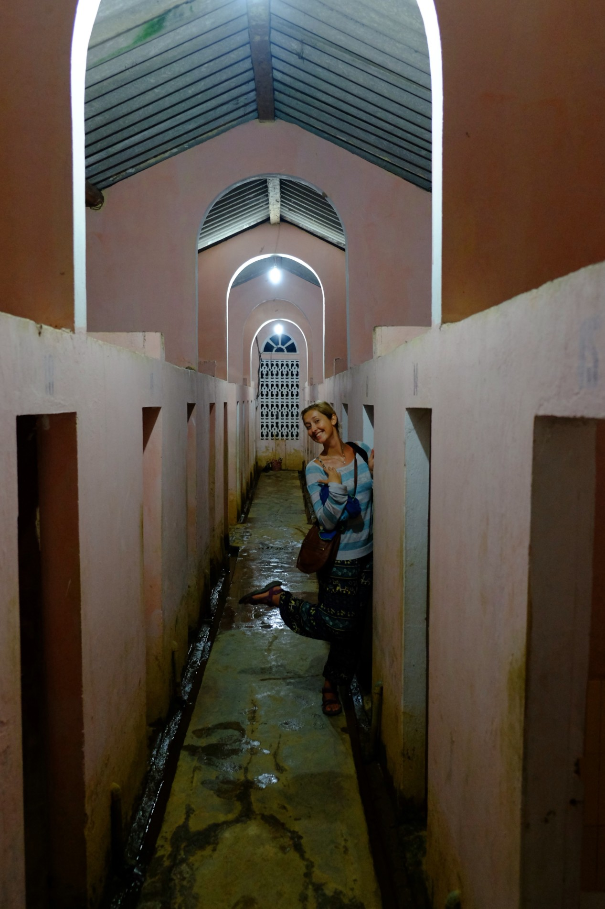
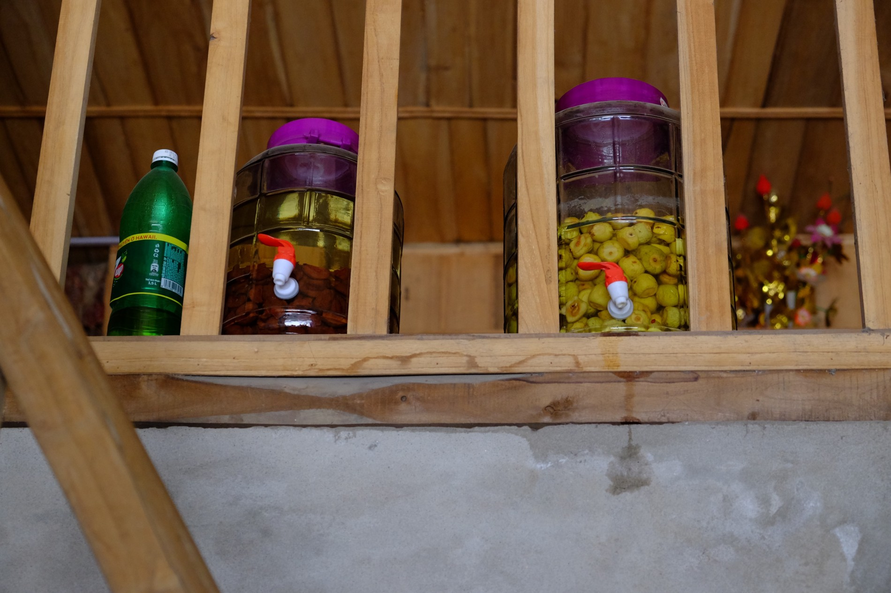
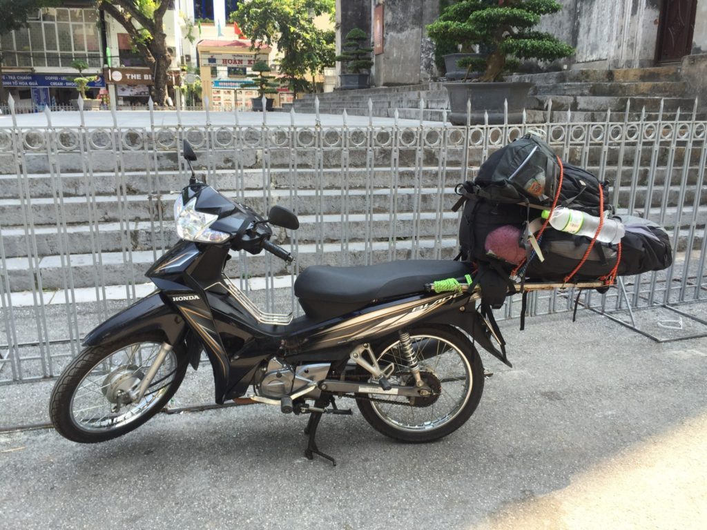
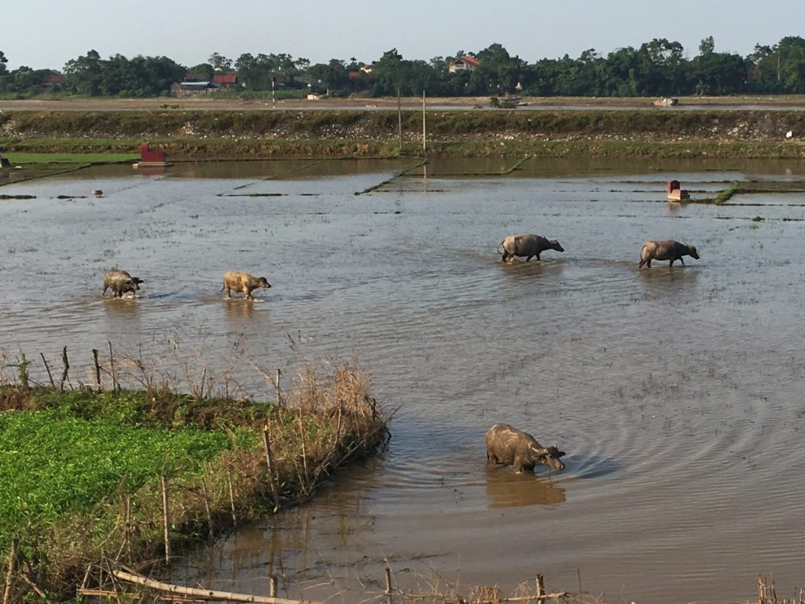

Naše hostitelka se včera vydala za hledáním vodopádů, a tak jsme přes noc zůstali pouze s jejími rodiči. Její mamka nám sekundovala jako babička, když nám cpala jídlo a ovoce na talíř až do úplného prasknutí.
Dnes nás čekal 100km dlouhý přejezd. Cesta utíkala skvěle, protože se jelo po krásné asfaltové silnici průsmykem mezi horami, a tak bylo stále na co koukat (jak uvidíte na fotkách níže).
Zastavili jsme u jedné restaurace kvůli protažení noh. Takhle to zhruba funguje:
Nezralá zelená rýže, která se jí syrová. Vietnamista Zdeněk přirovnával k našemu burčáku
Do města Ma Cung Chai jsme dorazili již s pořádně bolavými zadky. Pořád ještě ne a ne si na delší sezení na motorce zvyknout. Na doporučení Zdeňka jsme našli krásný homestay. Na kraji města s výhledem na řeku. Teď večer tu je příjemné ticho, maximálně tu bzučí hmyz. Vítaná změna oproti minulému ubytování, kde dům stál přímo u rušné cesty. Navíc v zatáčce, takže takřka každé projíždějící auto (a kamion) tam troubilo. Místní na to jsou prý zvyklí, ale mně to teda moc nechutnalo.
Veřejný záchod u řekyDnešní úlovek – pravá hmongská sukně
Ještě se pochlubim obrázkem, jak to taky může dopadnout, když zavítáte na vietnamskou wikipedii a necháte si to automaticky přeložit googlem. Hledal jsem informace o jednom městečku (okrese):
Ráno jsme vyrazili relativně brzo, což se nám tu moc často nestává. Nebylo nám však přáno a píchli jsme pneumatiku, takže jsme posnídali u místního mechanika v dílně/obyváku, který nám nalil neurčitý alkoholický nápoj a vyměnil pneumatiku. Cesta byla z části prašná a neupravená, takže když jsem se kochala krásami okolí, Mara se potil při řízení na štěrku. Tenhle úděl mu trochu nezávidím. Příroda je tu opravdu nepopsatelně nádherná a nepamatuji si, kdy se mi stalo naposled, že bych na něco koukala s otevřenou pusou tak jako dnes. A to jsme teprve na začátku 🙂
Odpoledne jsme dorazili do města Nghia Lo, kde jsme sháněli ubytování. Recepční z hotelu nám s úsměvem na rtech řekl, že shodou náhod má kamaráda, u kterého můžeme přespat a ten kamarád u sebe shodou náhod ubytoval nějakého Čecha. Klučina jménem Tung si nás opravdu za pár minut vyzvedl a odvezl domů. Tung bydlí se sestrou a rodiči v útulném domečku na okraji města. Opravdu tu mají ubytovaného Čecha jménem Zdeněk. Český důchodce a nadšený cestovatel, který provozuje web vietnamista.cz.
Tung nás vzal na procházku do vesnice asi kilometr odtud, kde vyvěrá horký pramen a celá místní vesnice se tam chodí koupat. Po cestě tam jsme potkali partičku kluků a jeden si vítězoslavně nesl uloveného hada domů na gril. Zjistili jsme, že kdo má dům v patře na kůlech, je bohatý a kdo má dům v patře a u silnice, patří mezi místní smetánku 😀 Po příchodu na místo přišlo menší rozčarování. Čekala jsem průzračné jezírko uprostřed přírody, ale našli jsme obří betonový kolos s pár vaničkami. Pokud byste nechtěli sdílet vanu s ostatními nebo čekat hodinu v řadě, můžete si připlatit a dát si vanu v místních „lázních“, kde máte čarovnou koupelničku sami pro sebe 😀
Večer nám Tungovi rodiče připravili velikou večeři a byla to neskutečná dobrota. Tungova maminka do nás nekompromisně cpala, co se vešlo 😀 Neustále nám dávala talíře s jídlem pod nos a pobízela, ať si vezmeme. Stejně jak u našich českých babiček, v tomhle případě není úniku.
Mám velkou radost z tohoto náhodného setkání, kdy jsme konečně mohli vidět život obyčejné vietnamské rodinky, dozvěděli se pár zajímavých informací od pana Zdeňka a viděli místní život vesničanů.
večeře místní lázně a čarovné koupelničky místní alkoholické nápoje
Včerejší menší výlet na motorce byla vlastně zkušební jízda motorky, která nás mohla doprovázet přes tři týdny severním vietnamem. Kdyby ovšem za něco stála. Ještě večer jsem našel za o maličko vyšší cenu novější, hezčí a (snad i) spolehlivější Hondu Blade.
Připraveni vyrazit – do kopců jezdíme jenom po zadním 🙂
Tři týdny na motorce? No jo, už to tak vypadá. Prostě proč ne. Severní vietnam má být moc krásný, tak si to chcem náležitě vychutnat. Chceme si projet osmičku z tohoto seznamu. Držte nám palce!
Cesta do první destinace trvala čtyři a půl hodiny během kterých jsme urazili asi 160km. Musim říct, že naše zadky to snášej opravdu špatně. Snad se to časem zlepší.
Jinak pořád mě udivuje ten jejich dopravní systém. Jako v moři. Velký ryby si dělaj co chtěj a ty menší je obeplouvaj. Tady pro sebe nemáte vyhrazenej celej svůj pruh. Tady jste rádi, když máte místo tak akorát pro sebe. Když vidim v zatáčce jet v protisměru kamion, okamžitě sundavam nohu z plynu, protože se v zápětí může objevit druhý náklaďák, který se ho (do zatáčky kam nevidí) snaží předjet. Nekecam, fakt se to stalo.
Nebo třeba jak si kamion v protisměru na rovince usmyslí, že bude předjíždět. Ale že pro nás na motorce už na silnici nezbyde místo? To neva, my klidně sjedem na krajnici do hlíny a počkáme, až bude cesta volná. Přece jenom se mi ještě umřít nechce.
Ač to může znít jako šílenost a hazard s vlastním životem, celkově mi tu jízda na motorce přijde bezpečnější než třeba v ČR. Lidi jsou tu na motorky zvyklí a určitě se nestane, že by nás tu někdo na silnici přehlídl. Nebo nedal přednost. Jenom na ty velký ryby si člověk musí dát majzla 😀
Na druhou stranu všichni se tu chovaj tak nějak víc logicky v rámci pravidla kdo víc troubí jede. A když z člověka opadne to počáteční zděšení, tak je to i zábava 🙂
Mauzoleum jsme dnes opět nestihli – má otevřeno „jenom“ do jedenácti. Lence se po snídani udělalo nevolno, a tak jsme strávili dopoledne v posteli a plánovali další směr našeho dobrodružství.
Okolo oběda jsme se vyrazili podívat na Imperial Citadel. Abychom vyzkoušeli něco nového, rozhodli jsme se svézt se kolo-rikšou. Pán si řekl za 2km cesty v přepočtu 200Kč. Lenka ho svým nekompromisním smlouváním dostala na 30Kč. Nutno říct, že když jsme dorazili, tak byl dost orosenej a vůbec nevypadal, že by z tohodle kšeftu měl radost 😀
Jako další sightseeing jsme dali Temple of Literature. Vydali jsme se pěšky a když jsem si kupoval obloženou bagetu (Lenka si nedala, protože ještě nechávala svůj žaludek odpočívat), tak si Lenka všimla vedlejšáku bagetářky – prodej klobouků. A do jednoho se zamilovala. Uspokojení Leny číslo jedna.
Chvilku jsme poseděli v chládku v chrámovém komplexu. Na sluníčku dneska bylo 35 stupňů a v tom se opravdu nedá existovat. Cestou zpátky jsme otestovali Uber a je to docela nezvyk platit za cestu taxíkem 20Kč 🙂
Vyhodil nás přímo před obchůdkem se sloníkovejma kalhotama (se vzorem slonů, ne ve sloní velikosti) a Lena dosáhla svého dnešního druhého uspokojení koupí hezkého kusu v neobvyklé největší velikosti. Abyste pochopili, jak kýžené to bylo vítězství. Včera večer jsme chodili od jednoho obchodu k druhému (všechny mají stejný sortiment) a hledali jsme kalhoty velikost číslo 5 s ucházejícím vzorem. Neúspěšně. Takže dnes opravdu velká radost, že se zadařilo.
Tento úspěch jsme spláchli polévkou Pho Bo. Lena zhodnotila vývar jako neškodné jídlo a poslala půlku porce do svého přecitlivělého žaludku. Všechno dobrý a navíc chutná velice podobně, jako ta pražská na náměstí Jiřího z Poděbrad.
Protože jsem ztratil kšiltovu (vítr mi ji odnesl při plavbě lodí z ostrova Ko Phan Gan), tak jsem si zašel pro nový sestřih. Akorát mě mistr vzal ty vousy trochu moc, tak teď mam sice letní sestřih po celý hlavě, ale vypadam jak malej kluk 🙂 Jo a taky si borec před započatím řekl v přepočtu o 15 korun, pak ale nejspíš na radu místního si uvědomil, že jsem bílej a že mě může oškubat daleko víc. A tak z něj na konci vypadlo 100Kč. Načež jsem mu odvětil něčim ve smyslu To ses asi posral kamaráde. Snažil jsem se ho uspokojit třicetikorunou, ale pravda vzal mi i ty vousy, tak jsme to nakonec nechali za pade. Žídek jeden.
Relax den jsme se jali zakončit masáží. Haluzoidně jsme se dostali k masáži za 450Kč/osoba za cenu skoro poloviční. Mně se to líbilo moc, Lena na předvedený výkon seslala hejt. Že prej jí masérka strhla největší strup z rány, jak na Lenu zaútočil bambusovej strom. A že masáž hlavy byla moc tvrdá. No prostě všechno špatně.
Když už Lena napsala poslední čtyři příspěvky na blog, tak jsem jí dneska jmenoval dvorní pisatelkou. Sliboval jsem si od toho, že se této nelehké funkce ujme s radostí a já budu moct nechat svého slovotvorného génia spát. A tak tady vidíte, jak to dopadlo. A takle my tu fungujem 😀
Rozhodl jsem se, že si jednou do obýváku pořídíme bonsajLenu pusinkuje želvaNa fotce to sice nevypadá, ale oranžově nasvícená Turtle Tower je přímo uprostřed jezeraTradiční cestovatelský sestřihJeště pořád mi ten úsměv na selfie tyčku nejde. Ale já to vypiluju!Rooftop bar našeho hostelu. Večeře zdarma za recenzi na tripadvisoru. Co bych neudělal pro jídlo zdarma 😀
Budíček mi zazvonil v 5:45, takže tenle den byl špatně hned od samýho začátku. Sbalit věci, v 6:30 taxi do přístavu, v 7:00 odjezd lodí. Na lodi Lena spala (víte, jak ve filmech vždycky tu mrtvolu přikryjou, aby se na ní ostatní nemuseli koukat..)
A já koukal na předstahovaný videa na youtube. Když jsem se šel projít a nakouknul jsem přes zábradlí, jak naše velká loď svojí rychlostí dělá obří vlnu, vítr mi odnesl kšiltovku. Tak jsem pro ní skočil a pak mi trvalo několik hodin, než jsem doplaval zbylých pár kilometrů na pevninu. Mezitim se Lena probudila a když mě na celé lodi nenašla, začla hrozně vyvádět až se na ní muselo vrhnout pět Thajců, jenom aby jí dokázali dát sedativa. (až po tu ztracenou čepici je to bohužel pravda).
Taky bych se mohl zmínit, jaký jsme si dali skvělý jídlo na přestupu, ale přeci si nebudu kazit večer tou hroznou vzpomínkou. No, Lena si dala bílou omáčku s houbama. Až na to, že houby nebyly houby, ale plíce (či jiný tomu podobný vnitřnosti), kterých se ze strachu experimentovat před bezmála tří hodinovou cestou v autobuse ani nedotkla. Já jsem si objednal vepřové curry, ale chybně jsem odhadl paní prodavačku, která ovšem správně odhadla mojí turistickou barvu kůže, když mi schválně nedala omáčku, a já jsem si tak sám naložil dvakrát tolik omáčky, abych snad nepřišel o nějakou nezapomenutelnou chuť. Inu, opravdu na to jídlo nezapomenu. Ale spíš než kvůli chuti to bude kvůli té jemné pálivosti, kterou jsem ještě půl hodiny rozdejchával.
Tři běloši (já, Lena a Australan) a jeden Thajec se opravdu nevejdou na zadní čtyřsedačku v mikrobuse dimenzovanou pro hubený Thajce. Ano, takže jako sardinky bez hnutí více než hodinu. Naštěstí pak pár místních vystoupilo, tak se situace v mikrobusu trochu uvolnila. K tomu ještě přispěla Lena se svým vykřiknutým požadavkem na řidiče, že by potřebovala toilet. Nechtělo se jí to držet dalších 45 minut. Stejně tomu pořád nerozumim. Vždyť přece byla těsně před odjezdem mikrobusu. Něco jako před hodinou a půl. To je délka průměrnýho filmu 🙂 Přibrzdili jsme jí na nejbližší benzínové stanici.
Khao Sok je prý nejdeštivější oblastí v Thajsku. Zdejší deštný prales by dokonce měl být starší než ten Amazonský. V době našeho příjezdu panoval zrovna ohromný slejvák, a tak jsme byli moc rádi, když nás mikrobusem odvezli až k našemu ubytování. Jeli jsme sem s plánem zaplatit si dvoudenní tůru plnou krásné přírody a úžasného dobrodružství. Ale za současného deště a předpovědi bouřek na následujících 14 dní jsme si nebyli jisti, do jaké míry bychom byli schopni jednotlivé části tůry absolvovat a nechtělo se nám vyhodit zbytečně relativně dost peněz. Tak se zítra půjdeme podívat po okolí a eventuelně se rozhodnem, jestli si nedáme aspoň kratší jednodenní tůru.
Přál bych vám zažít to noční ticho. Ani by vám nepřišlo, že je všude okolo prales.
Aspoň, že nemusim používat repelent. Stačí, když se držim blízko Leny. Všichni komáři jdou totiž na ní 😀 A taky mě samozřejmě baví, jak kvůli tomu psychuje 😀


{kind=link}
{kind=link}
{kind=link}
{kind=link}
{kind=link}
{kind=link}
{kind=link}
{kind=link}
{kind=link}
{kind=link}
{kind=link}
{kind=link}
{kind=link}
{kind=link}
{kind=link}
{kind=link}
{kind=link}
{kind=link}
{kind=link}
{kind=link}
{kind=link}